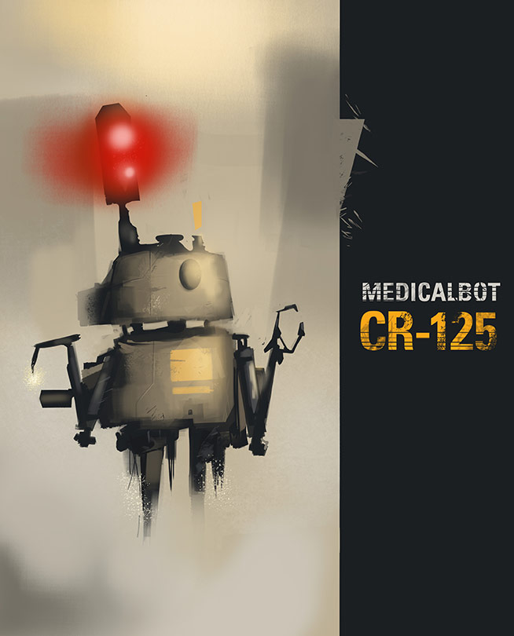
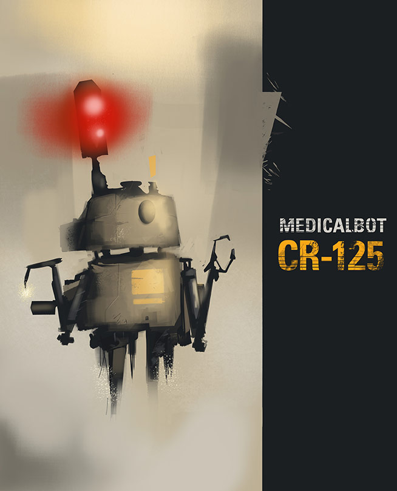
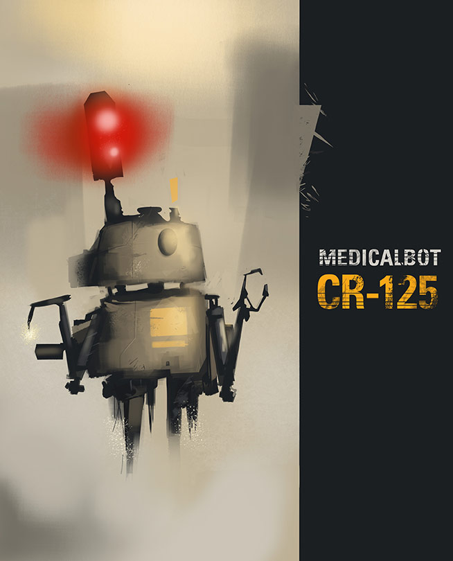
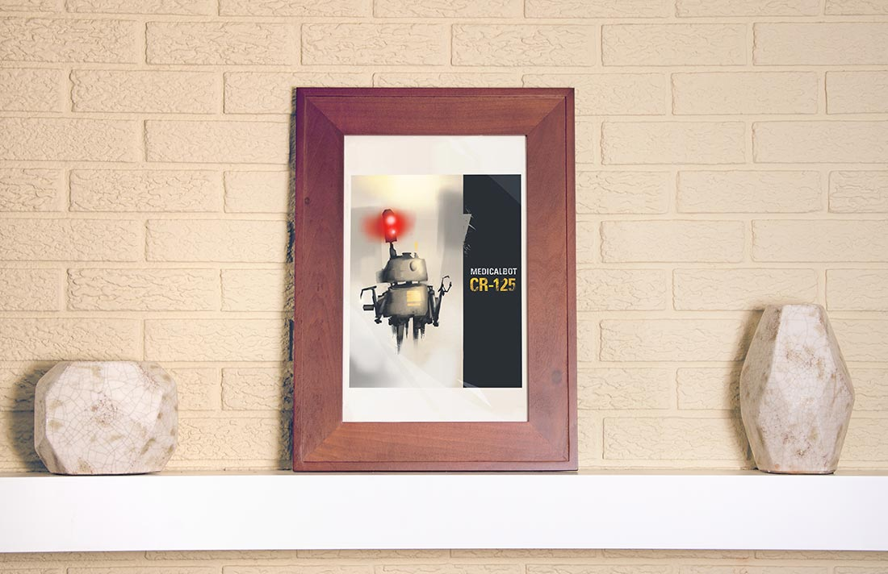

This is yet another in my Concept Art folder. I created what I think to be a very interesting concept for a medical robot that could be used in a movie and/or video game. I started out this personal project as a means to practice rendering metal for mechanicals and robots.

